Stillness · 적막
새벽 세 시의 방문자
익숙한 장소에 남겨진 낯선 흔적.
투야나와 랴오, 하인리히의 다른 모습을 만나보세요.
외양 시안 · 투야나와 랴오의 체력과 전투 성향은 원본과 같습니다.
밤의 얼어붙은 만
오로라 아래, 작은 발자국이 물가에서 이쪽으로 이어집니다.
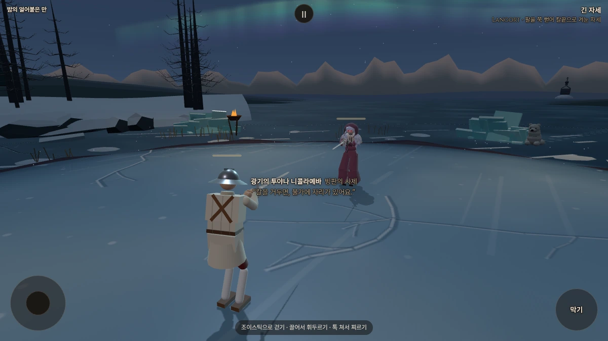
전투 시점. 달빛 아래 눈 둑과 먼 산이 다시 드러나고, 네 곳의 쇠 화로가 결투장 가장자리를 밝힙니다.
투야나와 대련하기
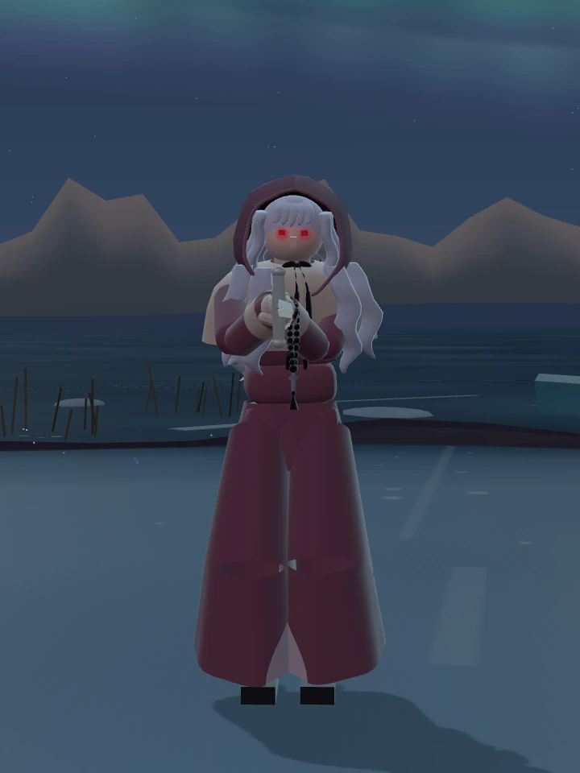
광기의 투야나 니콜라예바 · 자주색 사제복, 같은 계열의 깊은 후드와 붉은 안광.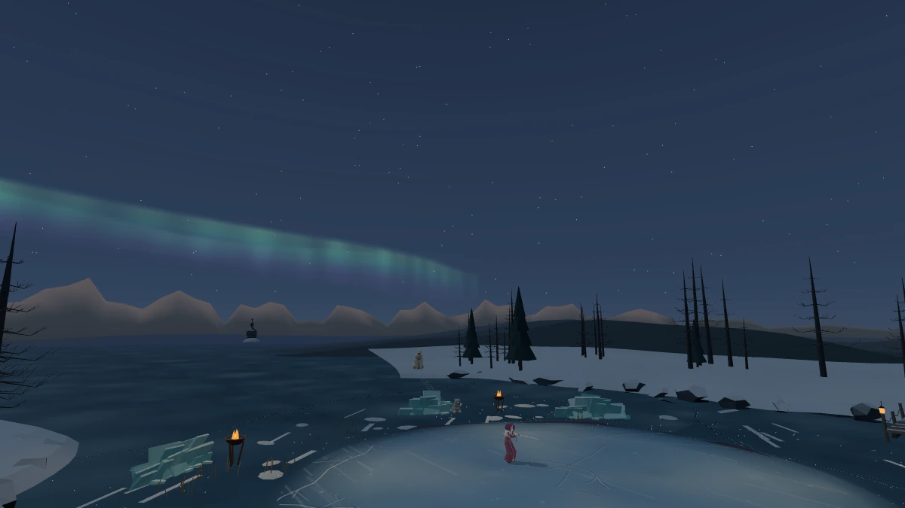
바람을 따라 천천히 움직이는 오로라.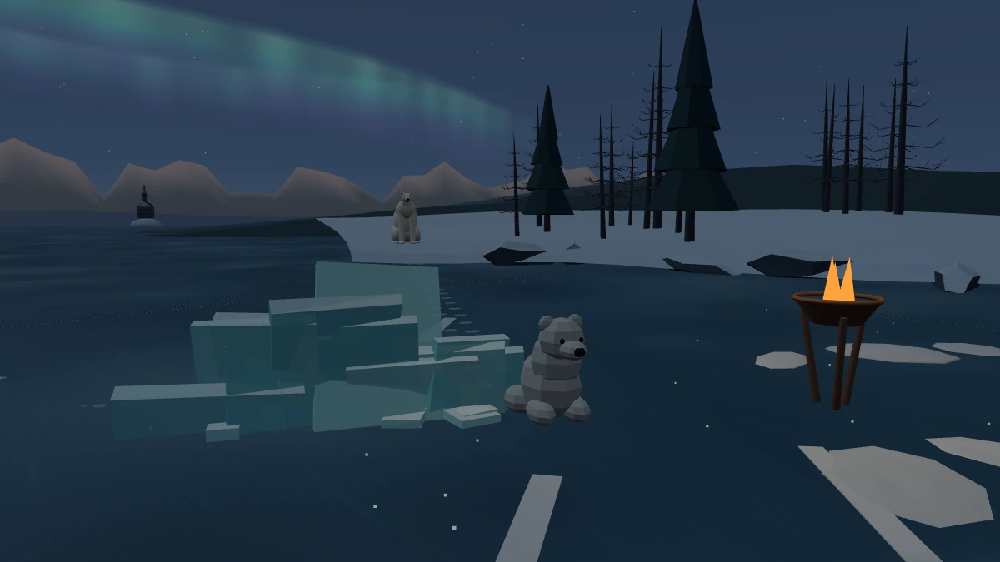
새끼곰은 투야나를 보러 온 걸까요. 물가의 어른 곰과 작은 발자국이 그 방문을 암시합니다.얼음 갈라지는 소리와 호숫바람은 원래 만의 소리를 이어갑니다.
밤 밝기·어미곰·후드 자세히 보기
낮의 투야나와 비교
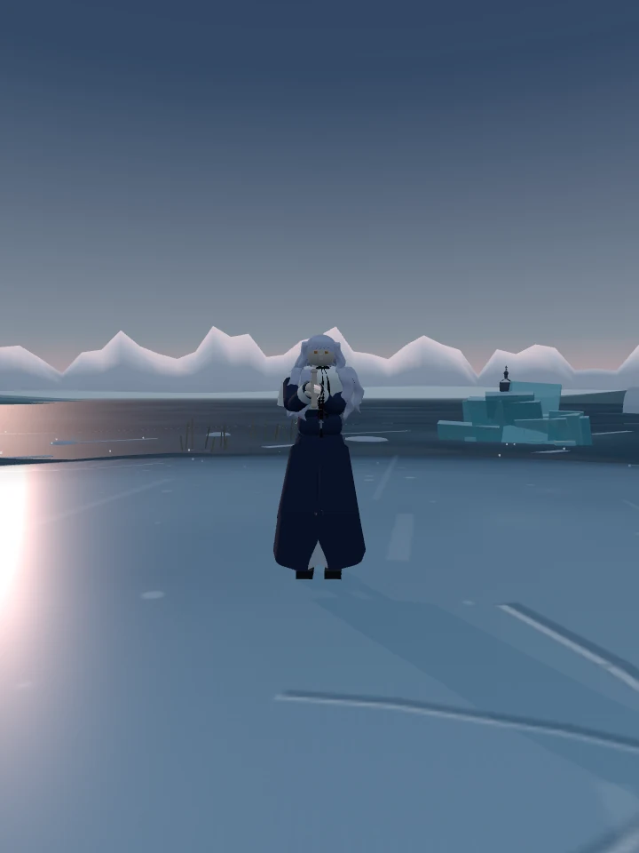
기존 투야나 · 남색 사제복. 기존 낮 무대의 모습입니다.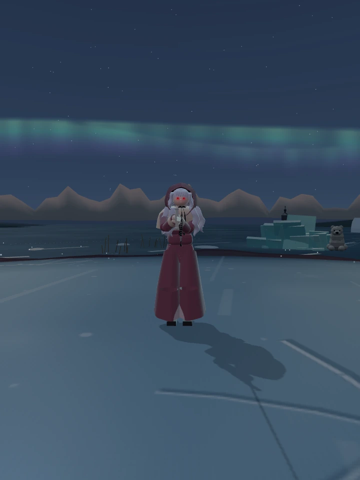
새 얼터 · 같은 카메라 구도, 밤 무대의 조명.밤의 산사
초승달 아래 놓인 안대. 빈 자리 앞에 찻잔 두 개와 촛불이 남았습니다.
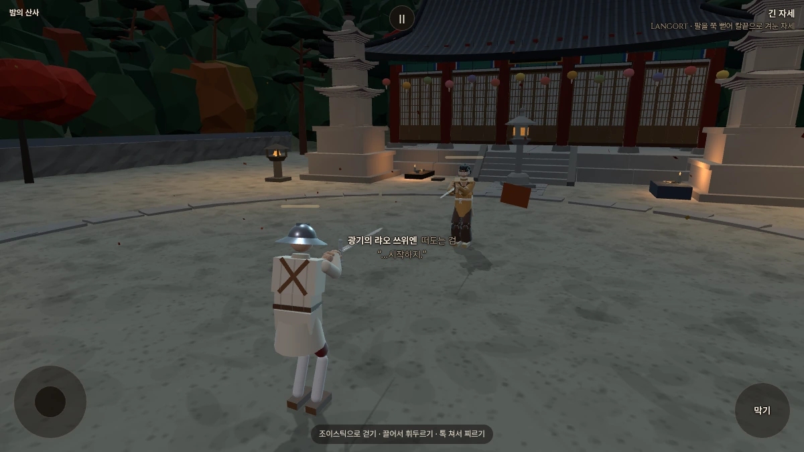
전투 시점. 돌 등불 네 곳이 마당 가장자리를 밝힙니다. 찻상에는 아직 촛불이 남아 있습니다.
랴오와 대련하기
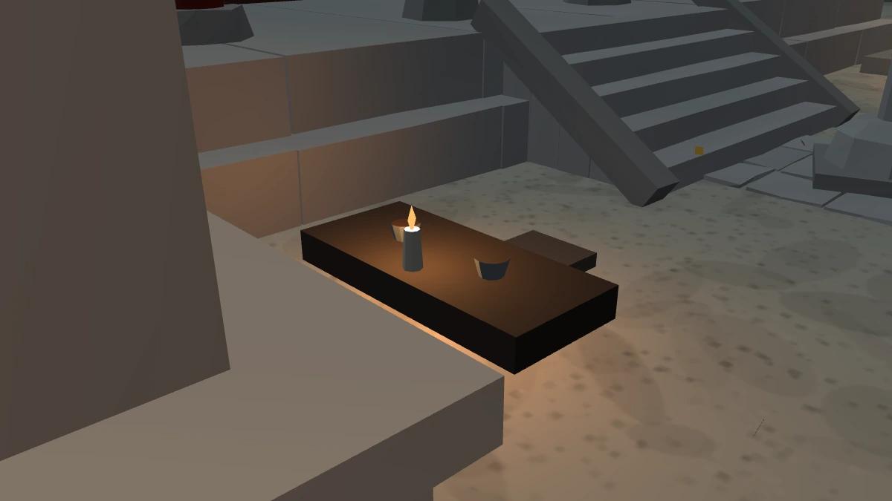
빈 자리와 두 찻잔. 누군가 돌아오기를 기다렸을까요. 밤에는 낮의 산새 대신 바람과 풍경 소리가 남습니다.
가림천의 결을 유지하며 붉은빛이 아주 옅게 배어 나옵니다. 관찰용 고개 회전이며, 맨눈처럼 선명한 눈동자나 빛꼬리는 없습니다.밤 밝기 비교
낮의 랴오와 비교
 기존 랴오 · 낮 무대.
기존 랴오 · 낮 무대.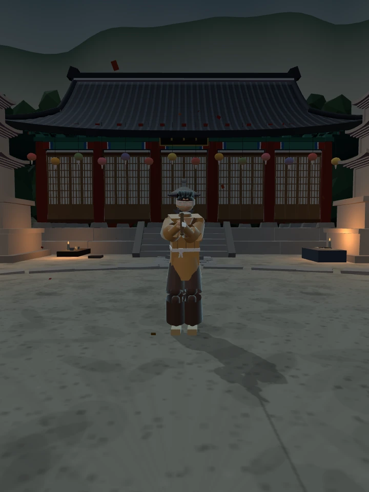
새 얼터 · 같은 카메라 구도, 밤 무대의 조명.밤의 포세이돈 신전
누군가 소원을 빌고 떠난 자리. 찢어진 검은 천은 아직 바람을 받습니다.
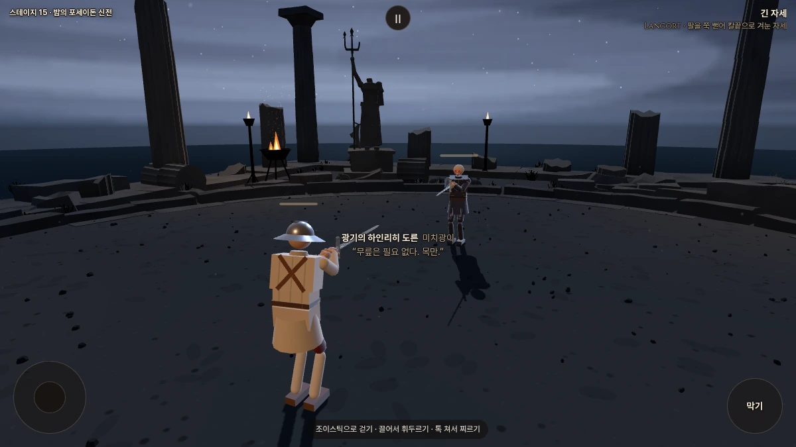
기준이 된 포세이돈의 달빛 구름 밝기를 복원했습니다.
하인리히와 대련하기
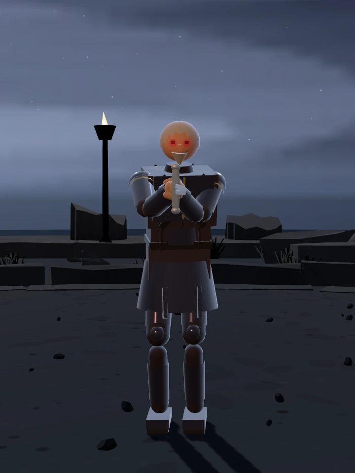
은색에서 어두운 자주색 강철로. 안광의 밝은 중심과 번짐을 낮추고, 느린 일렁임과 짧고 옅은 흔적을 남겼습니다.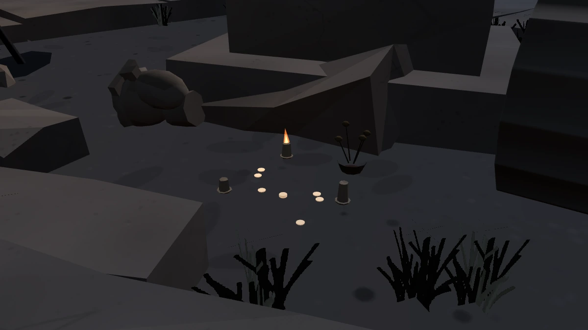
은화와 마른 꽃, 꺼진 초 둘과 켜진 초 하나. 기존에 있던 방문의 흔적을 유지했습니다.하인리히가 건 검은 천과 석상 앞의 봉헌물이 이 장소의 두 서사 단서입니다. 파도와 불꽃 소리가 이어집니다.
이전 외양 보기
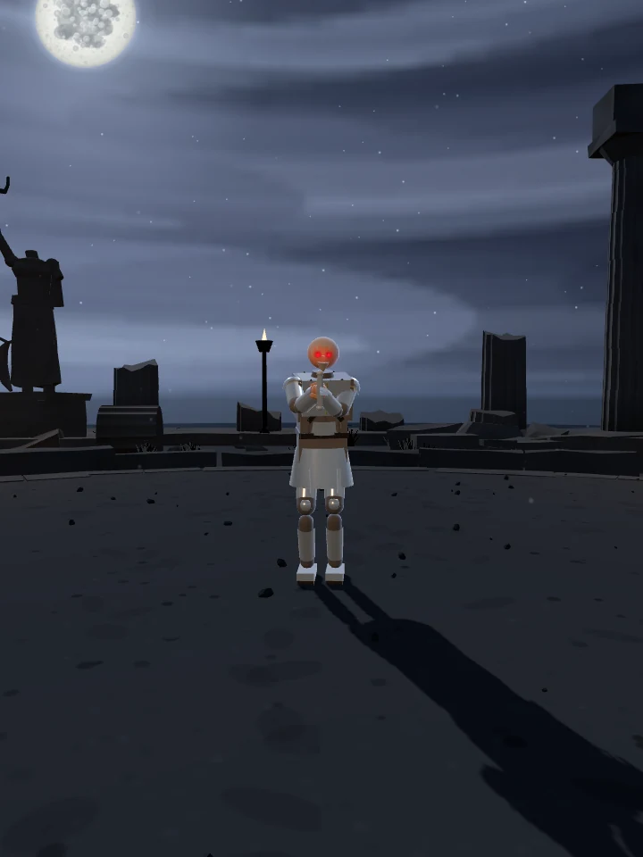
변경 전 · 은색 갑옷과 기존 안광.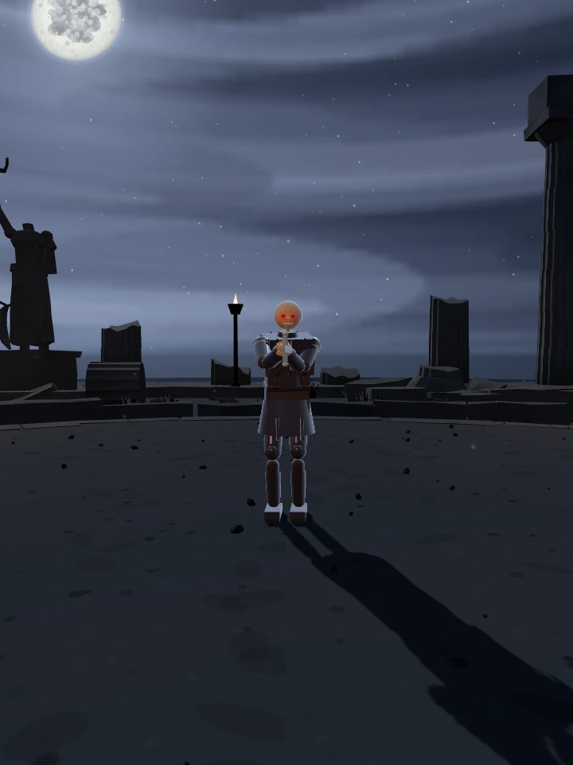
변경 후 · 같은 카메라 구도. 원래 포세이돈 하늘 밝기로 복원했습니다.